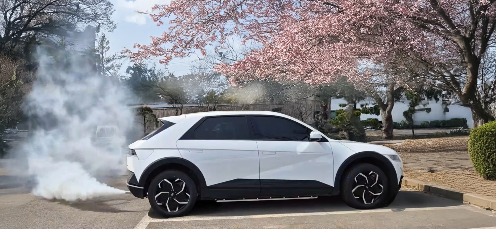

OAT 기술 소개 영상
OAT의 핵심 기술인 BFTC(Battery Fire Target Control)가 어떻게 전기차의 안전을 보장하는지 영상으로 확인해보세요. 실제 테스트 환경에서의 작동 원리와 뛰어난 성능을 직접 보실 수 있습니다.
영상 보기
주행 중 화재 제어 (업로드 예정)
실제 차량 주행 환경에서 OAT의 BFTC 기술이 어떻게 배터리 이상 징후를 감지하고 화재를 초기에 제어하는지 보여주는 실증 테스트 영상입니다. K-City에서의 테스트를 통해 열폭주 발생 후 30초 내에 온도가 안정화되는 과정을 담았습니다.
영상 보기

충전 중 화재 예방 (시연 영상)
갑자기 발생할 수 있는 배터리 과열 및 화재 위험을 OAT의 지능형 배터리 화재 타겟 진압 솔루션이 어떻게 열폭주를 진압하는지 보여주는 기술 시연 영상입니다. 이상 온도 및 압력 감지 후 즉시 진압을 시작하여 최고 온도를 약 350°C 미만으로 제어하는 데 성공했습니다.
영상 보기
BFTC의 강점 : 확장성
전기차 뿐만 아니라 선박 및 ESS 등 배터리를 사용하는 다양한 환경에서 운영 효율성과 안전성을 극대화하기 위해 개발된 BFTC 통합 모듈입니다. 설치 및 유지보수가 용이하며, 모듈형 설계로 높은 호환성을 자랑합니다. 이를 통해 다양한 분야에서 유지보수 비용을 30% 절감할 수 있을 것으로 기대됩니다.
이미지 보기